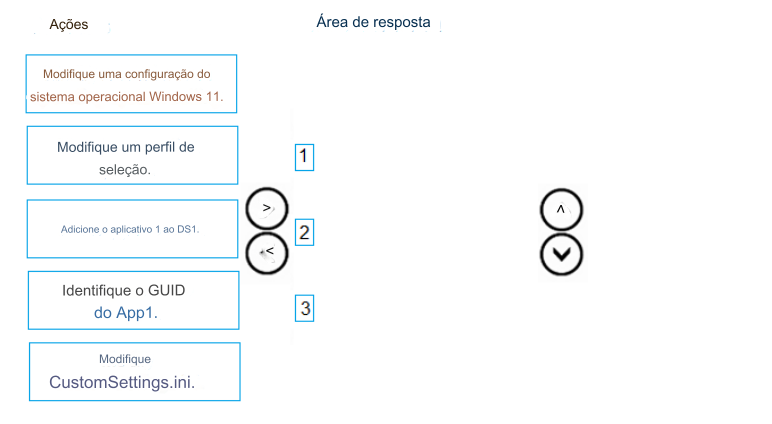

121- ARRASTE E SOLTE
Você tem um compartilhamento de implantação do Microsoft Deployment Toolkit (MDT) chamado DS1.
Você importa uma imagem do Windows 11 para DS1.
Você tem um instalador executável para um aplicativo chamado App1.
Você precisa garantir que o App1 será instalado para todas as sequências de tarefas que implantam a imagem.
Quais são as três ações que você deve executar em sequência? Para responder, mova as ações apropriadas
da lista de ações para a área de resposta e organize-as na ordem correta.
